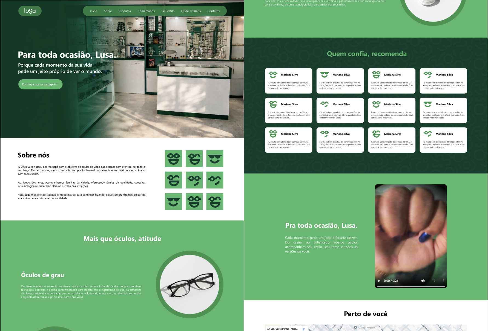

Branding · UI · Frontend
Ótica Lusa
Transformando nova identidade de marca em experiência digital.

Sobre o projeto
Projeto desenvolvido para a Ótica Lusa, uma ótica familiar de Massapê-CE, a partir da criação de uma nova identidade visual e de sua aplicação em uma experiência digital.
O objetivo foi fortalecer a presença da marca e criar uma comunicação mais consistente, traduzindo sua nova identidade para diferentes pontos de contato, incluindo uma landing page.
Rebranding
O projeto começou pela construção da nova identidade visual da marca, envolvendo a definição de logotipo, paleta de cores e tipografia. A proposta buscou criar uma linguagem visual mais atual e reconhecível para a Ótica Lusa, estabelecendo elementos que pudessem ser utilizados de forma consistente também em seus canais digitais.
Da identidade à interface
Com a identidade definida, a linguagem visual foi traduzida para a landing page, adaptando cores, tipografia, composição e hierarquia visual ao contexto digital. Mais do que aplicar os elementos do rebranding, a intenção foi fazer com que eles contribuíssem para a organização das informações e para a forma como o usuário navega e conhece a marca.
Do protótipo ao código
Após a etapa de design e prototipação, também participei da implementação frontend da landing page. Essa etapa permitiu transformar as decisões tomadas no design em uma interface funcional, conciliando a identidade visual desenvolvida com as possibilidades da implementação.